Foundr Vignette
Brian Yandell
2023-03-02
foundr.Rmd##
## Attaching package: 'dplyr'## The following objects are masked from 'package:stats':
##
## filter, lag## The following objects are masked from 'package:base':
##
## intersect, setdiff, setequal, union## Registered S3 method overwritten by 'ordr':
## method from
## ggplot_add.LayerRef gggdaSample Data
sampleSignal <- partition(sampleData)
sampleStats <- strainstats(sampleData)
sampleStats %>%
filter(term == "signal")## # A tibble: 4 × 5
## dataset trait term SD p.value
## <chr> <chr> <chr> <dbl> <dbl>
## 1 sample C signal 1.16 0.00228
## 2 sample A signal 1.07 0.300
## 3 sample D signal 0.785 0.666
## 4 sample B signal 0.796 0.126- C on A: mostly signal
- mean cor = 0.0107; signal cor = 0.90
- -10*log(p.value) = 1.97, 2.81
- D on B: negligible signal
- mean cor = 0.8110; signal cor = 0.28
- -10*log(p.value) = 0.32, 2.73
Scatterplots
out <- traitSolos(sampleData, sampleSignal,
response = "value")
plot(out)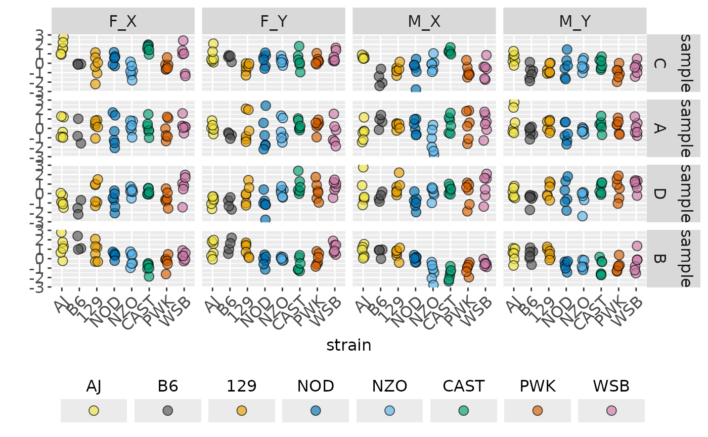
plot(out, facet_strain = TRUE)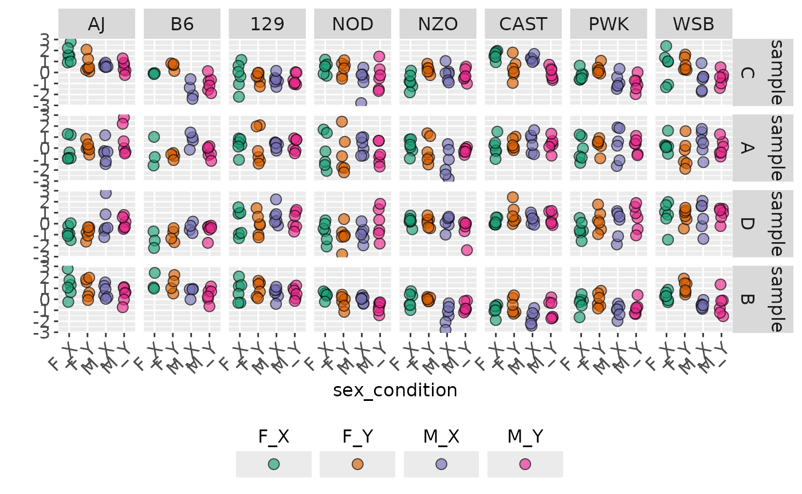
out2 <- traitPairs(
out,
traitnames = attr(out, "traitnames"),
pair = c(
paste(attr(out, "traitnames")[1:2], collapse = " ON "),
paste(attr(out, "traitnames")[3:4], collapse = " ON ")))
plot(out2, parallel_lines = TRUE)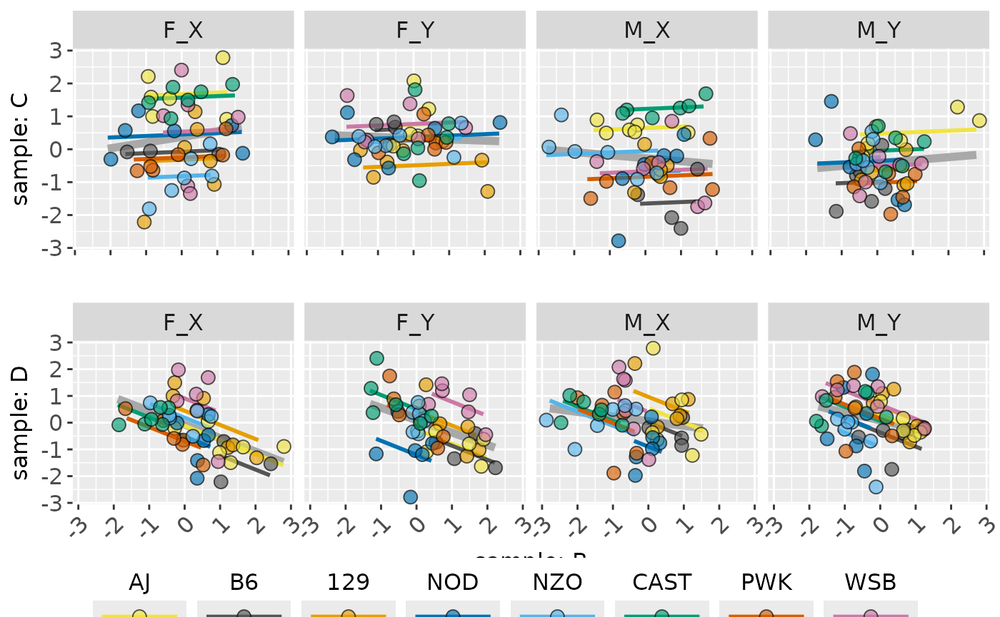
plot(out2, facet_strain = TRUE)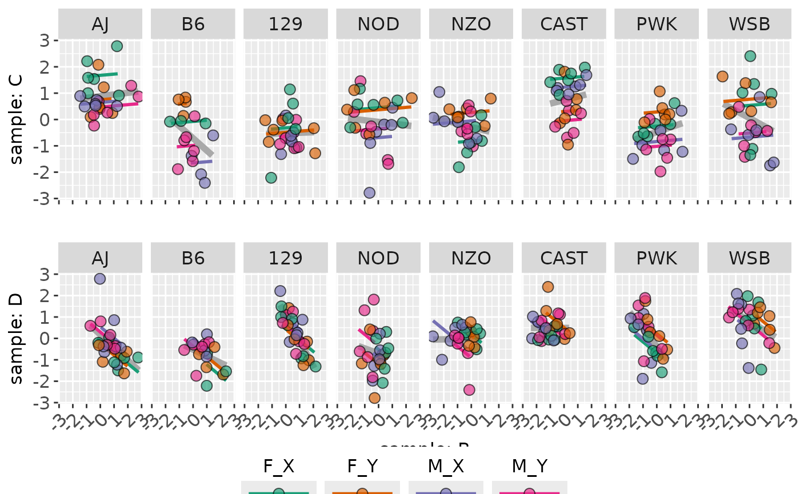
plot(out2, facet_strain = TRUE, parallel_lines = FALSE)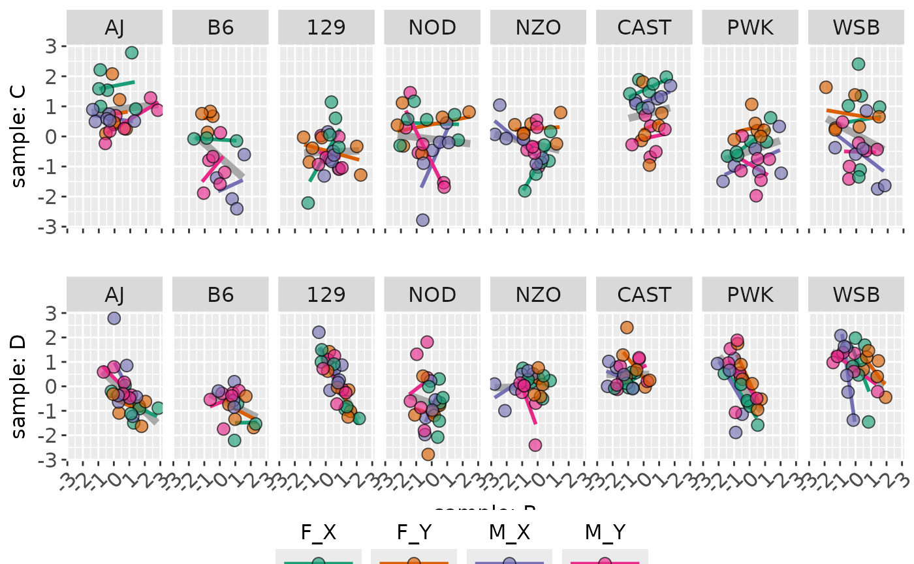
Plots of Means
out <- traitSolos(sampleData, sampleSignal,
response = "cellmean")
summary(out)## # A tibble: 16 × 12
## dataset sex condition trait AJ B6 `129` NOD NZO CAST
## <fct> <chr> <chr> <fct> <dbl> <dbl> <dbl> <dbl> <dbl> <dbl>
## 1 sample F Y C 0.752 0.599 -0.487 0.342 0.258 0.316
## 2 sample F X C 1.67 -0.0951 -0.307 0.432 -0.812 1.58
## 3 sample M X C 0.625 -1.62 -0.648 -0.681 -0.114 1.25
## 4 sample M Y C 0.508 -1.00 -0.626 -0.380 -0.254 -0.0314
## 5 sample F Y A 0.0706 -0.708 0.0666 -0.589 -0.217 0.334
## 6 sample F X A -0.115 -0.459 0.256 -0.351 0.136 0.114
## 7 sample M X A -0.420 0.733 0.258 0.167 -1.34 0.494
## 8 sample M Y A 0.792 -0.365 0.264 -0.510 -0.225 0.354
## 9 sample F Y D -0.798 -1.04 -0.0708 -1.09 0.130 0.826
## 10 sample F X D -0.763 -1.48 0.0542 -0.723 0.225 0.174
## 11 sample M X D 0.161 -0.356 0.673 -0.888 0.105 0.416
## 12 sample M Y D 0.0674 -0.569 0.324 0.0306 -0.527 0.542
## 13 sample F Y B 1.03 1.35 0.930 -0.216 0.0136 -0.604
## 14 sample F X B 1.22 1.49 0.738 0.384 -0.0764 -0.956
## 15 sample M X B 0.712 0.686 0.552 -0.0174 -1.42 -1.65
## 16 sample M Y B 0.434 0.382 0.576 -0.712 -0.714 -0.912
## # ℹ 2 more variables: PWK <dbl>, WSB <dbl>
plot(out)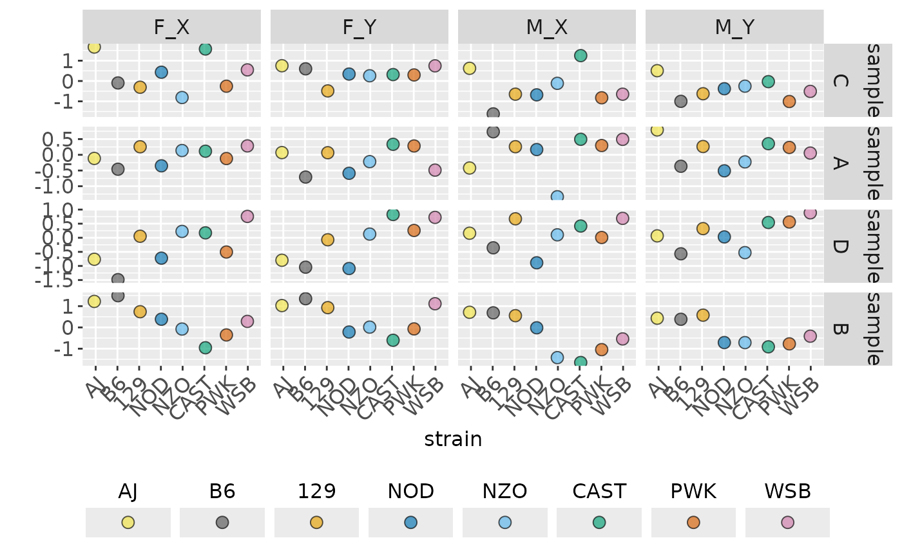
ggplot_traitSolos(out)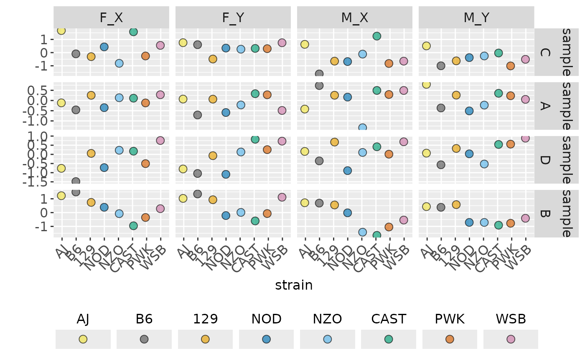
out2 <- traitPairs(
out,
traitnames = attr(out, "traitnames"),
pair = c(
paste(attr(out, "traitnames")[1:2], collapse = " ON "),
paste(attr(out, "traitnames")[3:4], collapse = " ON ")))
plot(out2, parallel_lines = TRUE)## Warning in ggplot2::geom_line(ggplot2::aes(y = .data$.fitted), span = span, : Ignoring unknown parameters: `span`
## Ignoring unknown parameters: `span`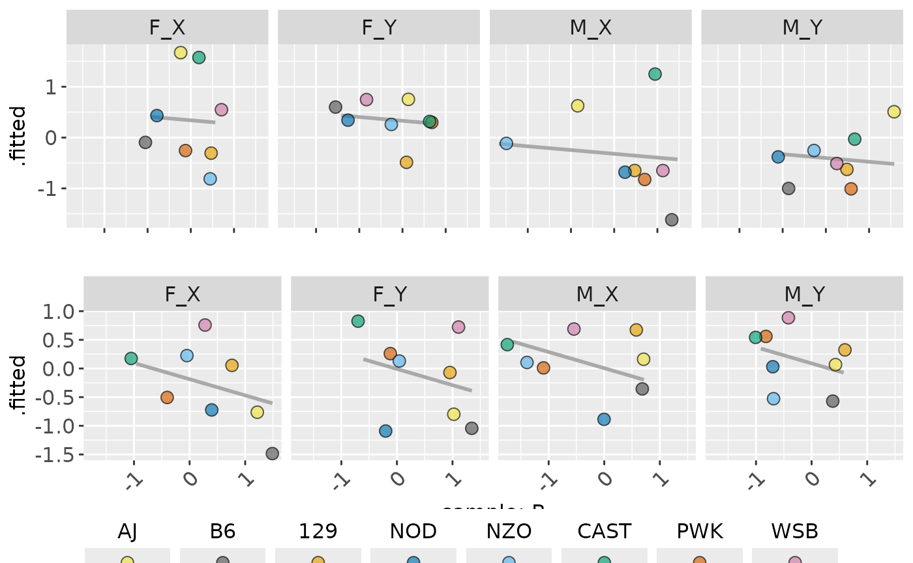
ggplot_traitPairs(out2, parallel_lines = FALSE)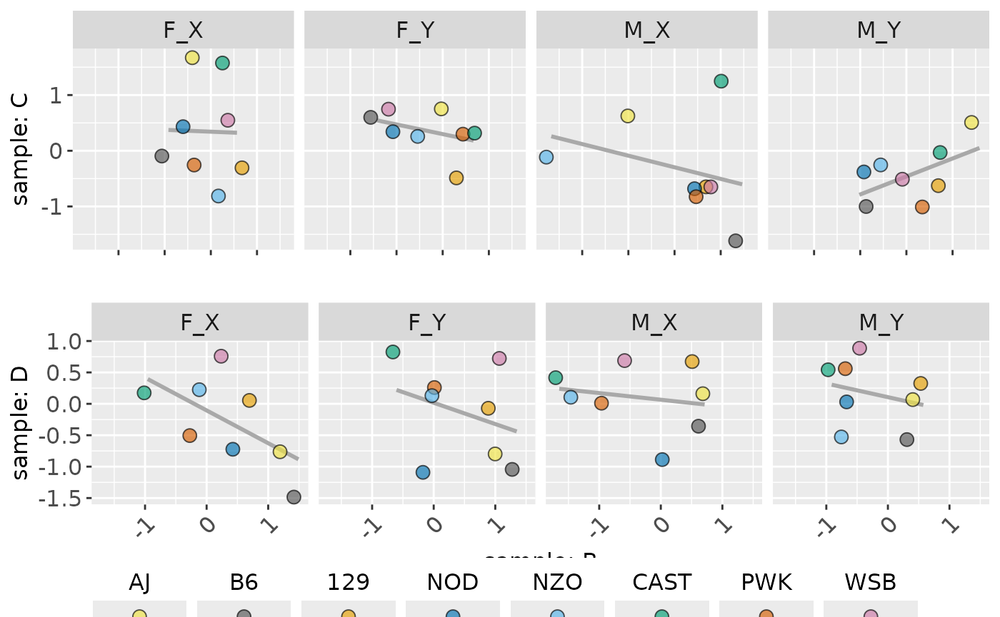
out <- traitSolos(sampleData, sampleSignal,
response = "signal")
plot(out)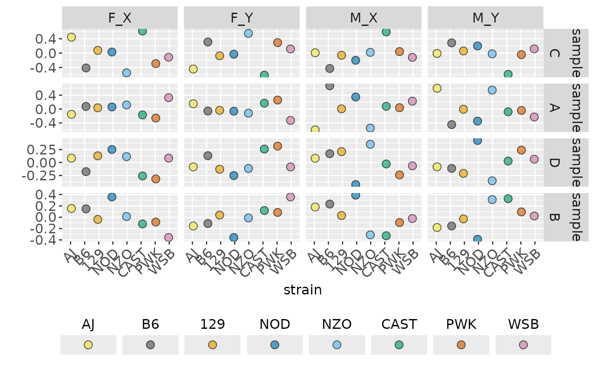
out2 <- traitPairs(
out,
traitnames = attr(out, "traitnames"),
pair = c(
paste(attr(out, "traitnames")[1:2], collapse = " ON "),
paste(attr(out, "traitnames")[3:4], collapse = " ON ")))
plot(out2)## Warning in ggplot2::geom_line(ggplot2::aes(y = .data$.fitted), span = span, : Ignoring unknown parameters: `span`
## Ignoring unknown parameters: `span`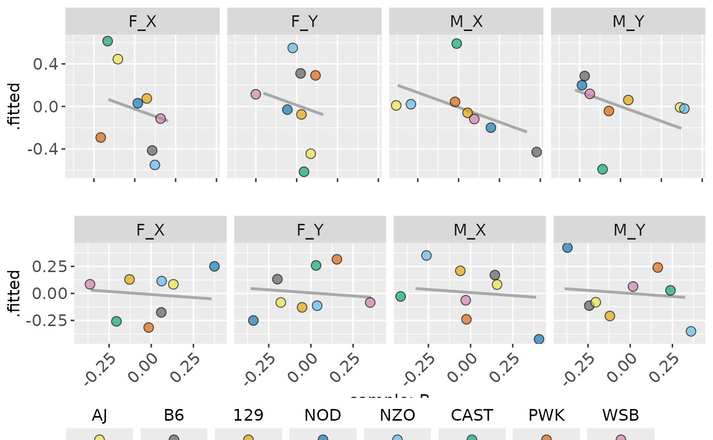
Correlations and Effects
volcano(sampleStats, "signal")## Warning: Removed 3 rows containing missing values or values outside the scale range
## (`geom_text_repel()`).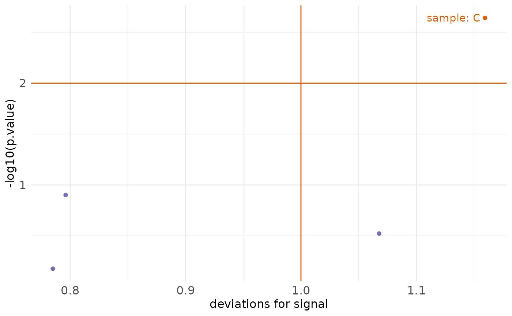
summary(sampleStats)## # A tibble: 4 × 5
## dataset trait term deviance log10.p
## <chr> <chr> <chr> <dbl> <dbl>
## 1 sample C strain 2.18 8.66
## 2 sample B strain 1.83 7.32
## 3 sample C strain:condition 1.35 2.77
## 4 sample D strain 1.55 2.40
summary(sampleStats, "deviation", "parts")## # A tibble: 128 × 6
## dataset strain sex condition trait value
## <fct> <fct> <chr> <chr> <fct> <dbl>
## 1 sample B6 F Y C 0.311
## 2 sample B6 F X C -0.414
## 3 sample B6 M X C -0.429
## 4 sample B6 M Y C 0.286
## 5 sample 129 M X C -0.0601
## 6 sample 129 F X C 0.0751
## 7 sample 129 F Y C -0.0751
## 8 sample 129 M Y C 0.0601
## 9 sample AJ F X C 0.445
## 10 sample AJ F Y C -0.445
## # ℹ 118 more rows
summary(sampleStats, "log10.p", "terms")## # A tibble: 128 × 6
## dataset strain sex condition trait value
## <fct> <fct> <chr> <chr> <fct> <dbl>
## 1 sample B6 F Y C 0.311
## 2 sample B6 F X C -0.414
## 3 sample B6 M X C -0.429
## 4 sample B6 M Y C 0.286
## 5 sample 129 M X C -0.0601
## 6 sample 129 F X C 0.0751
## 7 sample 129 F Y C -0.0751
## 8 sample 129 M Y C 0.0601
## 9 sample AJ F X C 0.445
## 10 sample AJ F Y C -0.445
## # ℹ 118 more rows
summary(sampleStats, "log10.p", "terms", threshold = NULL)## # A tibble: 128 × 6
## dataset strain sex condition trait value
## <fct> <fct> <chr> <chr> <fct> <dbl>
## 1 sample B6 F Y C 0.311
## 2 sample B6 F X C -0.414
## 3 sample B6 M X C -0.429
## 4 sample B6 M Y C 0.286
## 5 sample 129 M X C -0.0601
## 6 sample 129 F X C 0.0751
## 7 sample 129 F Y C -0.0751
## 8 sample 129 M Y C 0.0601
## 9 sample AJ F X C 0.445
## 10 sample AJ F Y C -0.445
## # ℹ 118 more rows
effectplot(sampleStats, trait_names(sampleStats, "C"))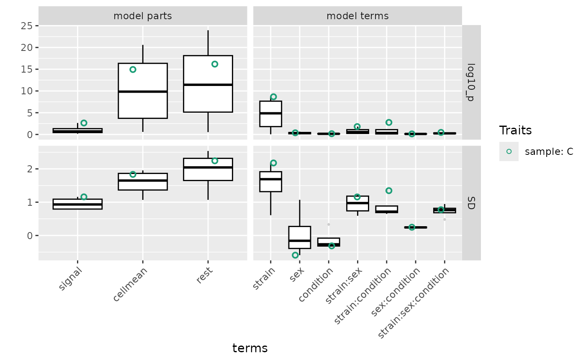
Shiny App
This package is equiped with a default app in inst/shinyApp/app.R. Other applied apps can be found in https://github.com/byandell/FounderCalciumStudy and https://github.com/byandell/FounderDietStudy. Users can deploy their own version of apps.
More is needed here to explain the steps to set up:
- harmonize data with harmonize(); see example in https://github.com/byandell/FounderCalciumStudy/blob/main/DataHarmony.Rmd.
- customize app.r; see example in https://github.com/byandell/FounderCalciumStudy/blob/main/app.R
with components
- install packages for the deployment platform that are not already present
- read in trait data created in harmonize step
- set
customSettings - provide custom title to
foundr::foundrUI()